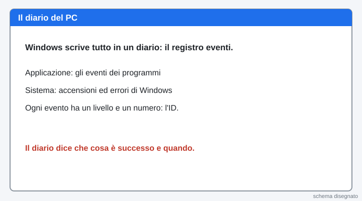
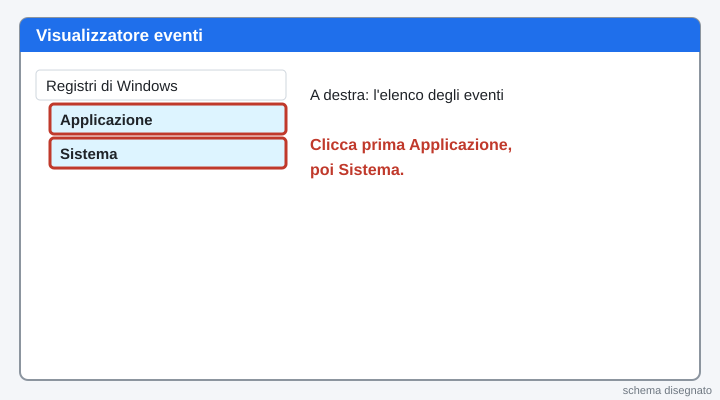
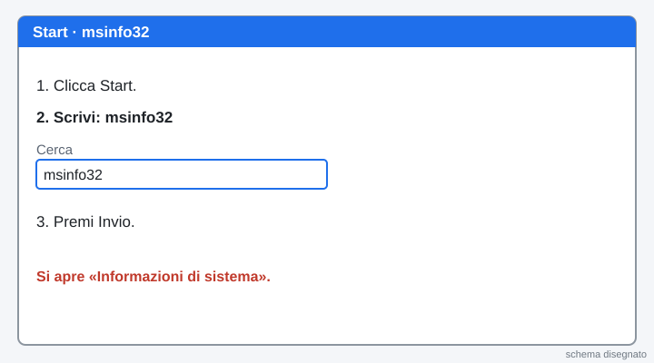
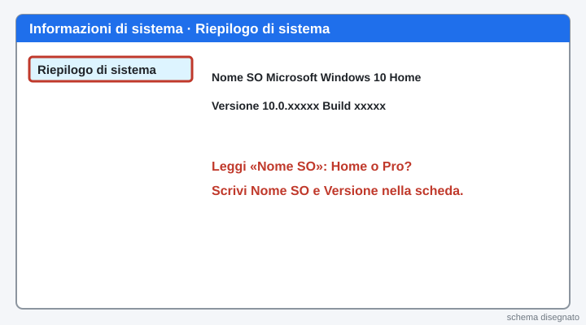
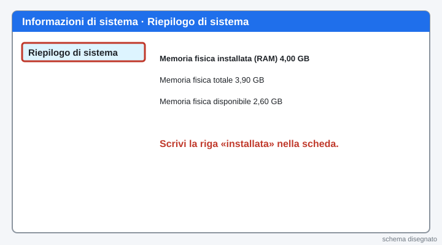
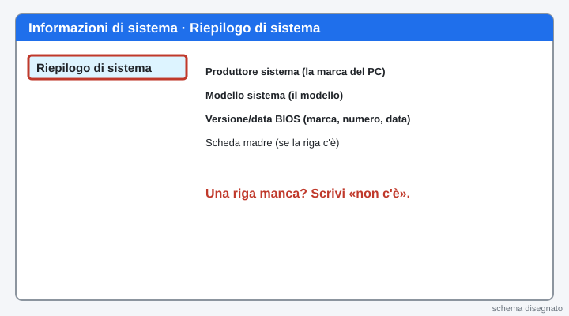
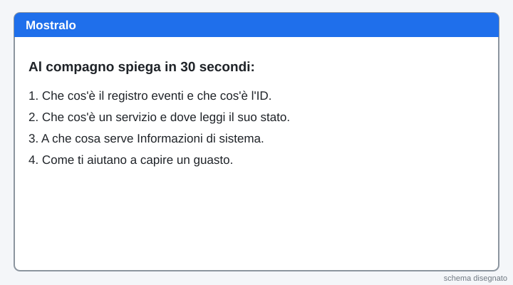

2INF · Laboratorio professionale · lunedì 09/11/2026 · ora 5 (12-13) · ognuno sul suo PC · si consegna la scheda con un bottone
Ora 5 · Diagnosi dei guasti software: eventi
La pagina viene aggiornata spesso durante la lezione: premi F5 per vedere la versione nuova.
Questa è la dispensa dell'ora, in una pagina sola. Oggi il PC è appena installato e non è in rete: lavori solo con l'account REGGE (amministratore).
Scegli una scheda dall'indice qui sopra, oppure premi il bottone blu «Vai qui adesso»: ti porta al passo giusto.
Oggi si legge e basta: un passo alla volta, fai solo quello che c'è scritto e non cambiare nessuna impostazione.
Hai un dubbio sul lavoro? Scrivi all'assistente in fondo alla pagina: risponde subito. Il Professore serve per un PC rotto.
Chi sei?
Scrivi nome e cognome e scegli il numero del tuo PC (adesivo sul PC).
Sei bloccato? Scrivi la domanda nella casella dell'assistente in fondo alla pagina: ti risponde subito. Alza la mano solo se il PC non funziona.
Scheda A · Visualizzatore eventi
La teoria in schede
Leggi dall'alto in basso. Una idea per scheda.

1. Il diario del PC
Windows scrive in un diario tutto quello che succede: accensioni, errori, avvisi. Si chiama registro eventi. Quando un PC ha un guasto, il diario dice che cosa è successo e quando.
2. I due registri che usiamo
Applicazione e Sistema. In Applicazione ci sono gli eventi dei programmi. In Sistema ci sono le accensioni e gli errori di Windows.
3. Il livello
Ogni evento ha un livello, dal meno grave al più grave: Informazioni, Avviso, Errore, Critico. Informazioni vuol dire «tutto bene, è successa una cosa».
4. L'ID evento
Ogni tipo di evento ha un numero, l'ID. Per esempio 12 = il sistema operativo è stato avviato. Con l'ID e l'Origine si cerca la causa di un guasto.
5. La copia del diario
Si può salvare una copia del diario in un file .evtx. La copia non toglie niente al PC: serve per conservare una prova o per farla vedere a un collega.
Parole nuove
| Registro eventi | il diario di Windows |
|---|---|
| Visualizzatore eventi | il programma che mostra il diario |
| Origine | chi ha scritto l’evento (un programma o una parte di Windows) |
| ID evento | il numero di un tipo di evento |
| Filtro | serve a vedere solo gli eventi che cerchi |
| Livello | quanto è grave: Informazioni, Avviso, Errore, Critico |
| File .evtx | la copia salvata del registro |
1Apri Visualizzatore eventi
Sei dentro come REGGE. Clicca con il tasto destro sul pulsante Start, in basso a sinistra. Nel menu clicca Visualizzatore eventi.
Cosa devi vedere: Si apre la finestra «Visualizzatore eventi».

2Vinci subito: guarda i registri
A sinistra clicca la freccia di Registri di Windows per aprirla. Clicca Applicazione.
Poi clicca Sistema.
Cosa devi vedere: A destra compare un elenco di eventi, con le colonne Livello, Data e ora, Origine, ID.

3Leggi un evento informativo
Clicca Applicazione. Cerca una riga con livello Informazioni e fai doppio clic sulla riga.
Nella scheda Generale leggi la frase. Scrivi nella scheda in fondo Origine, ID e che cosa dice. Poi chiudi la finestrella con la X.
Cosa devi vedere: Una frase che dice che cosa è successo, con Origine e ID.

4A che ora si è acceso il PC?
Clicca Sistema. A destra clicca Filtra registro corrente…. Nella casella ID scrivi 12 e premi OK.
Leggi l'ora della riga in alto e scrivila nella scheda.
Cosa devi vedere: La riga dice «Il sistema operativo è stato avviato».

5Ripasso veloce
Quale registro contiene le accensioni e gli errori di Windows?
Che cosa vuol dire l'ID 12?
Che cos'è un filtro?
Cosa devi vedere: tre risposte giuste in verde.

6Trova un errore
Nel registro Sistema clicca a destra Cancella filtro (se c’è). Poi clicca Filtra registro corrente….
Spunta Critico e Errore e premi OK. Se non c’è nessun evento, spunta anche Avviso e premi di nuovo OK.
Fai doppio clic su una riga e scrivi nella scheda l'Origine e l'ID. Non devi capire tutto: basta leggere.
Cosa devi vedere: Un elenco di eventi con una X rossa o un triangolo giallo.

7Salva una copia del registro
Clicca Azione (in alto), poi Salva tutti gli eventi con nome…. Scegli la cartella Documenti. Scrivi il nome eventi-pc e il tuo numero di PC. Premi Salva.
Cosa devi vedere: In Documenti c'è un file .evtx con il tuo nome.

8Fallo tuo: spiega un evento
Scegli un evento di Sistema che ti incuriosisce. Scrivi nella scheda l'ID, l'Origine e che cosa dice, con parole tue. Se non capisci, chiedi all'assistente.
Cosa devi vedere: Hai scelto un evento e l'hai spiegato.

Scheda B · Servizi (solo leggere)
La teoria in schede
Leggi dall'alto in basso. Una idea per scheda.
1. Il servizio
Un servizio è un programma che lavora dietro le quinte, senza finestre. Per esempio quello che scrive il diario di Windows, o quello che serve per stampare.
2. Lo stato
Lo Stato dice se il servizio sta lavorando adesso: «In esecuzione». Se la casella è vuota, il servizio non sta lavorando.
3. Il tipo di avvio
Automatico = parte da solo quando si accende Windows. Manuale = parte solo quando serve. Disabilitato = non parte.
4. Perché non si ferma niente
Un servizio fermato per sbaglio può rompere Windows. Oggi li leggiamo soltanto: Stato, Tipo di avvio e Descrizione.
Parole nuove
| Servizio | programma che lavora dietro le quinte, senza finestra |
|---|---|
| Stato | se il servizio sta lavorando adesso |
| Tipo di avvio | quando parte: Automatico, Manuale, Disabilitato |
| Descrizione | una frase che dice a che cosa serve il servizio |
9Apri Servizi
Clicca Start, scrivi Servizi e premi Invio.
Cosa devi vedere: Si apre la finestra «Servizi (locale)» con un lungo elenco.

10Leggi lo stato di tre servizi
Cerca la riga Registro eventi di Windows. Leggi Stato e Tipo di avvio. Scrivili nella scheda in fondo.
Fai lo stesso con Spooler di stampa e con Windows Update. Solo guardare: non fermare niente.
Cosa devi vedere: Registro eventi e Spooler: «In esecuzione» e «Automatico». Windows Update: di solito «Manuale». Sul tuo PC può essere un po’ diverso: scrivi quello che vedi.

11Leggi la descrizione di un servizio
Fai doppio clic su Registro eventi di Windows. Nella scheda Generale leggi la Descrizione.
Scrivi nella scheda a che cosa serve, con parole tue. Poi premi Annulla. Non premere Arresta.
Cosa devi vedere: La finestra si chiude e il servizio resta «In esecuzione».

12Ripasso veloce
Che cosa vuol dire «Automatico»?
Che cosa fai oggi con i servizi?
Lo Stato è vuoto. Che cosa vuol dire?
Cosa devi vedere: tre risposte giuste in verde.
Scheda C · Informazioni di sistema
La teoria in schede
Leggi dall'alto in basso. Una idea per scheda.
1. Perché serve
Prima di cercare un guasto, un tecnico vuole sapere con che PC ha a che fare: quale Windows, quanta memoria, che modello. Informazioni di sistema le mette tutte in una finestra.
2. Che cosa si legge
La versione di Windows (per esempio Home o Pro), la memoria RAM installata, il produttore e il modello del PC, il BIOS e, se c’è la riga, la scheda madre.
3. BIOS e scheda madre
La scheda madre è la scheda grande dove sono collegati tutti i pezzi del PC. Il BIOS è il programma che parte per primo, prima di Windows.
Parole nuove
| msinfo32 | il nome corto del programma Informazioni di sistema |
|---|---|
| Versione di Windows | quale Windows è installato (Home, Pro...) |
| RAM | la memoria che il PC usa mentre lavora |
| BIOS | il programma che parte per primo, prima di Windows |
| Scheda madre | la scheda dove sono collegati tutti i pezzi del PC |
13Apri Informazioni di sistema
Clicca Start, scrivi msinfo32 e premi Invio.
Cosa devi vedere: Si apre «Informazioni di sistema» con «Riepilogo di sistema» a sinistra.

14Leggi Windows
A destra leggi la riga Nome SO e la riga Versione. Scrivile nella scheda in fondo.
Cosa devi vedere: Nome SO dice «Microsoft Windows 10» e poi Home o Pro.

15Leggi la memoria
Scorri la lista a destra fino a Memoria fisica installata (RAM). Scrivi il numero nella scheda.
Cosa devi vedere: Un numero in GB, per esempio 4,00 GB.

16Leggi modello e BIOS
Leggi Produttore sistema, Modello sistema e Versione/data BIOS. Scrivili nella scheda.
Se vedi anche la riga della scheda madre (Produttore o Prodotto scheda di base), scrivila. Se non c’è, scrivi «non c’è».
Cosa devi vedere: Tre righe con la marca, il modello e il BIOS del PC.

Scheda D · Quiz e consegna
17Quiz su Moduli (10 domande, servono 7 giuste)
Premi il bottone verde: si apre il quiz in una scheda nuova. Dove c'è «scegli 2 risposte» metti DUE crocette. Puoi rifarlo: vale il migliore.
Apri il quiz su ModuliCosa devi vedere: Alla fine del quiz torna a questa pagina.

18Mostralo: spiegalo al compagno
Racconta al compagno in 30 secondi: che cos'è il registro eventi e l'ID, che cos'è un servizio e dove leggi il suo stato, a che cosa serve Informazioni di sistema.
Cosa devi vedere: Se sai spiegarlo con parole tue, l'hai capito.

19Scheda e Manda al prof
Compila la scheda qui sotto e premi il bottone verde Manda al prof. Un clic solo.
Se il bottone non funziona: premilo di nuovo tra un minuto. La scheda resta salvata in questa pagina. Se ancora non va, scrivi all'assistente.

La pagina viene aggiornata spesso durante la lezione: premi F5 per vedere la versione nuova.